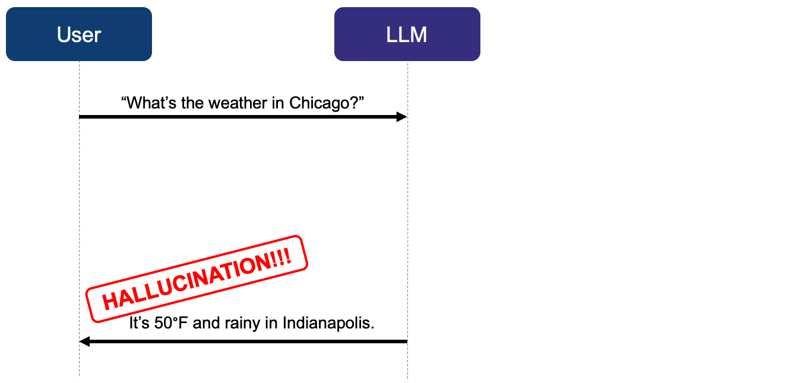
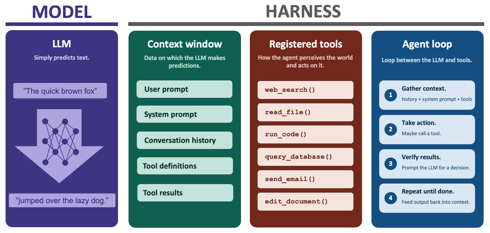
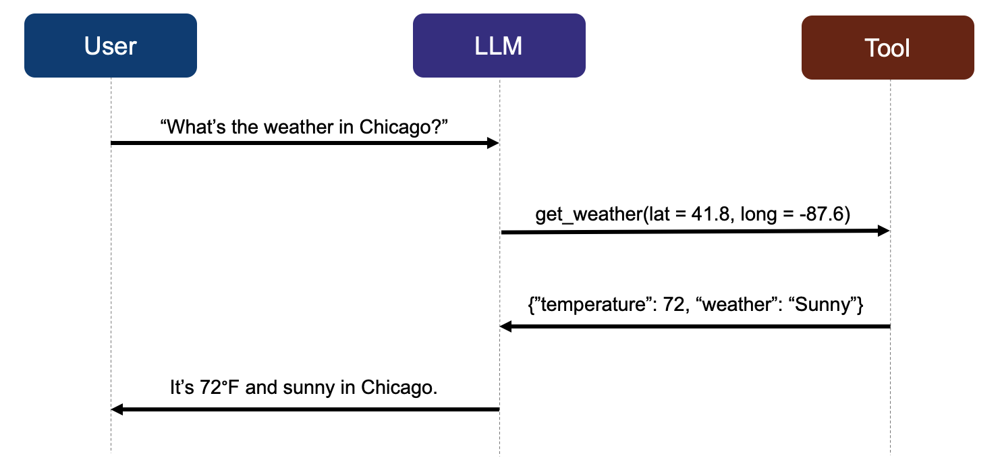

1 Deconstructing agents
An agent is an artificial intelligence system that interacts with its environment, pursues goals, and takes actions. Because agents rely on large language models, they are vulnerable to bizarre unpredictable errors called hallucinations. To develop an agent that controls hallucinations, we first need to understand the relevant components of agents and how they work together. This chapter describes these concepts and lays the groundwork for trusted mini-agents in later chapters.
1.1 Large language models are not agents.
By itself, a large language model is just a text-in/text-out machine learning model. When generating predictions, an LLM has no ability to learn, no agency, and no ability to make decisions. It only predicts lexical “tokens” similarly to how a simple linear regression model predicts new outcomes on a new dataset.
No statistical model makes perfect predictions, which is why LLMs hallucinate. For example, suppose an LLM makes a prediction on this new dataset: “What’s the weather in Chicago?” The LLM blindly pattern-matches text to accompany the new data, and this prediction could be wrong.

1.2 Agent = LLM + harness
At the implementation level, an agent is an LLM combined with a “harness”. The harness is the non-AI computing infrastructure that surrounds the LLM: the chat interface, the conversation history, long-term memory files, the agent loop, and above all, tools.

1.3 How agents use tools
A tool is an external capability that the LLM can request to use. Tools empower the agent to perceive the world and act on it. Structrually, a tool is a function combined with metadata.
\[ \begin{aligned} \text{Tool} = \text{Function} + \text{Metadata} \end{aligned} \]
A function is a transformation from structured inputs to structured outputs, such as a system library, R function, API, or script file. The metadata is a set of instructions in the system prompt that tells the LLM when and how to use the function.
To request to use a tool, the LLM generates a tool call. A tool call is a string of text that identifies the tool and specifies a set of input values (i.e. function arguments). Tool calls are structured in a format like JSON so the harness can validate them against schemas. This enforced structure lets the harness parse the call and evaluate the tool.
1.4 Example: a weather agent
Let’s design an agent to get the current weather at a given location in the United States. Suppose we have a tool that scrapes the National Weather Service (NWS) API. We write an R function get_weather(), and we include metadata to describe its inputs, outputs, and purpose. Suppose the user prompts:
“What’s the weather in Chicago?”
Instead of a plain language response, the LLM may generate a JSON tool call:
{
"tool": "get_weather",
"input": {
"lat": 41.8,
"long": -87.6
}
}The harness recognizes this JSON string as a tool call and validates it against the schema for get_weather(). Afterwards, it runs the underlying function call:
get_weather(lat = 41.8, long = -87.6)and emits structured output back to the model:
{"temperature": "72°F", "weather": "Sunny"}The model may then incorporate this structured output into its next response to the user.
It’s 72°F and sunny in Chicago.
1.5 Illustrating the workflow
The following sequence diagram illustrates the workflow of the example weather agent from the previous section.1

Control and information flow among the user, LLM, and tool. The harness brokers this flow. Think of the harness as the image background and the collection of horizontal arrows in the diagram. The background glues the components together, and each arrow converts an output from one component into an input to another. For example, the arrow labeled “get_weather(lat = 41.8, long = -87.6)” shows how the harness delivers the LLM-generated tool call to the tool itself. (The harness, not the LLM, actually runs tools.) Designing a trusted mini-agent is all about drawing the best arrows, as we will see in the next chapter.
The documentation of
ellmercautions against this diagram because it draws a direct arrow from the LLM to the tool. As theellmerauthors rightly emphasize, the LLM does not actually run the tool: it only proposes an unevaluated tool call. However, our diagram is different because we think of the arrow as part of the harness. We do not imply that LLMs run tools. We only imply that the harness delivers the call from the LLM to the tool. This simplified framing helps us build trusted mini-agents in later chapters.↩︎